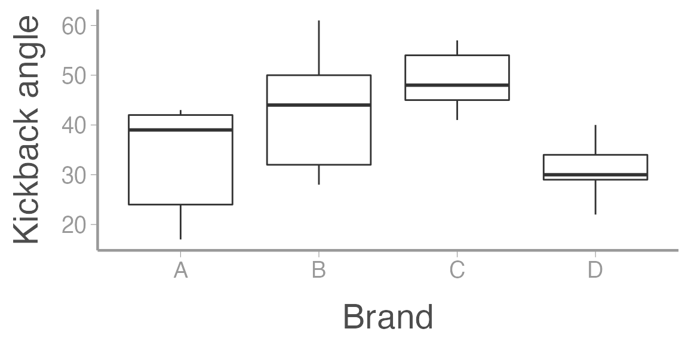
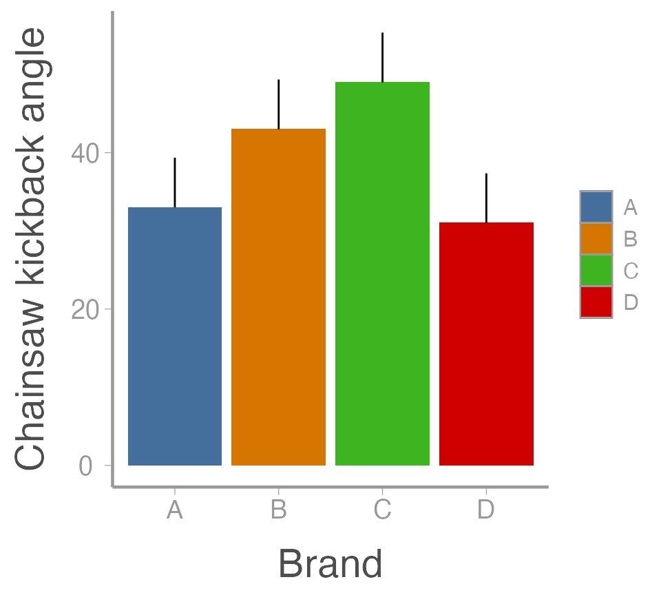

lab03_ANOVA.RmdR
The kick angle measurements for the 4 brands of chainsaw:
library(FANR6750)
data("sawData")
head(sawData)
#> y Brand
#> 1 42 A
#> 2 17 A
#> 3 24 A
#> 4 39 A
#> 5 43 A
#> 6 28 BVisualize the data:
ggplot(sawData, aes(x = Brand, y = y)) +
geom_boxplot() +
scale_y_continuous("Kickback angle")
aov()
aov.out1 <- aov(y ~ Brand, data = sawData)
summary(aov.out1)
#> Df Sum Sq Mean Sq F value Pr(>F)
#> Brand 3 1080 360 3.56 0.038 *
#> Residuals 16 1620 101
#> ---
#> Signif. codes: 0 '***' 0.001 '**' 0.01 '*' 0.05 '.' 0.1 ' ' 1The default output from summary is fine for viewing in
the console but what if you want to include the ANOVA table in a report
or paper? You could manually create a table and copy/paste the values,
but that’s a pain. Luckily, there is a handy package called
broom that turns the output from many model functions into
cleaned-up data frames:
broom::tidy(aov.out1)
#> # A tibble: 2 × 6
#> term df sumsq meansq statistic p.value
#> <chr> <dbl> <dbl> <dbl> <dbl> <dbl>
#> 1 Brand 3 1080. 360. 3.56 0.0382
#> 2 Residuals 16 1620 101. NA NAIn R Markdown, we can even include that data frame as a nicely formatted table directly in the knitted document:
aov_df <- broom::tidy(aov.out1)
options(knitr.kable.NA = '') # don't print NA's in table
knitr::kable(aov_df,
col.names = c("Source", "df", "SS", "MS", "F", "p"),
align = 'c', format = "html") | Source | df | SS | MS | F | p |
|---|---|---|---|---|---|
| Brand | 3 | 1080 | 360.0 | 3.556 | 0.0382 |
| Residuals | 16 | 1620 | 101.2 |
model.tables(aov.out1, type = "means", se = TRUE)
#> Tables of means
#> Grand mean
#>
#> 39
#>
#> Brand
#> Brand
#> A B C D
#> 33 43 49 31
#>
#> Standard errors for differences of means
#> Brand
#> 6.364
#> replic. 5
model.tables(aov.out1, type = "effects", se = TRUE)
#> Tables of effects
#>
#> Brand
#> Brand
#> A B C D
#> -6 4 10 -8
#>
#> Standard errors of effects
#> Brand
#> 4.5
#> replic. 5
(ybar. <- mean(sawData$y))
#> [1] 39As with most things in R, there are several ways to
calculate the group means. First, find the group means, the hard
way:
A <- sawData$y[sawData$Brand == "A"]
B <- sawData$y[sawData$Brand == "B"]
C <- sawData$y[sawData$Brand == "C"]
D <- sawData$y[sawData$Brand == "D"]
(ybar.i <- c(mean(A), mean(B), mean(C), mean(D)))
#> [1] 33 43 49 31Better yet, use tapply to find the group means (the base
R way):
(ybar.i <- tapply(sawData$y, INDEX = sawData$Brand, FUN = mean))
#> A B C D
#> 33 43 49 31Finally, find the group means, the tidyverse way:
library(dplyr)
(ybar.i <- sawData %>%
group_by(Brand) %>%
summarise(mu = mean(y)))
#> # A tibble: 4 × 2
#> Brand mu
#> <chr> <dbl>
#> 1 A 33
#> 2 B 43
#> 3 C 49
#> 4 D 31Although each of these methods does what we want - return the mean kickback angle for each group - note that they do not return the same type of object.
Use the class() function to see what type of object each
one returns.
When might the output from each method be useful?
Sums of squares among
# Number of saw brands
a <- length(unique(sawData$Brand))
# Number of measurements of each brand (note, this assumes balanced design)
n <- nrow(sawData)/a
SSa <- n * sum((ybar.i$mu - ybar.)^2)
SSa
#> [1] 1080Sums of squares within
mean.SE <- 6.364 # from model.tables() -- see slide 7.
# Add SE column
ybar.i <- dplyr::mutate(ybar.i, SE = mu + mean.SE)
ggplot(ybar.i, aes(x = Brand, y = mu, fill = Brand)) +
geom_col() +
geom_errorbar(aes(ymin = mu, ymax = SE), width = 0) +
scale_y_continuous("Chainsaw kickback angle")
TukeyHSD(aov.out1)
#> Tukey multiple comparisons of means
#> 95% family-wise confidence level
#>
#> Fit: aov(formula = y ~ Brand, data = sawData)
#>
#> $Brand
#> diff lwr upr p adj
#> B-A 10 -8.207 28.2074 0.4214
#> C-A 16 -2.207 34.2074 0.0956
#> D-A -2 -20.207 16.2074 0.9888
#> C-B 6 -12.207 24.2074 0.7826
#> D-B -12 -30.207 6.2074 0.2727
#> D-C -18 -36.207 0.2074 0.0532A biologist wants to compare the growth of four different tree species she is considering for use in reforestation efforts. All 32 seedlings of the four species are planted at the same time in a large plot. Heights in meters recorded after several years.
Create an R Markdown file to do the following:
R chunk to load the data using:Create a header called “Hypotheses” and under this header, indicate, in plain English, what the null and alternative hypotheses are. Also use R Markdown’s equation features to write these hypotheses (to the extent possible) using mathematical notation
Create a header called “ANOVA by hand”. Under this header,
perform an ANOVA analysis (degrees of freedom, sums-of-squares,
mean-squares, and F-value) without using aov().
Compute either the critical value of F, or the
p-value. Be sure to annotate your
code.
Create a header called “ANOVA in R”. Under this header, perform
an ANOVA analysis on the data using the aov()
function
Under a subheader called “ANOVA results”:
indicate whether or not the null hypothesis can be rejected at the \(\alpha = 0.05\) level
include a well-formatted ANOVA table using the
broom::tidy() function
create a barplot showing the group means and SEs
Create a header called “Which means are different?”. Use Tukey’s HSD test to determine which pairs of means differ at the \(\alpha = 0.05\) level. Include a few sentences indicating which pairs are different
A few things to remember when creating the assignment:
Be sure the output type is set to:
output: html_document
Title the document:
title: "Lab 3 assignment"
Be sure to include your first and last name in the
author section
Be sure to set echo = TRUE in all R
chunks so we can see both your code and the output
Please upload both the html and .Rmd
files when you submit your assignment
See the R Markdown reference sheet for help with creating
R chunks, equations, tables, etc.